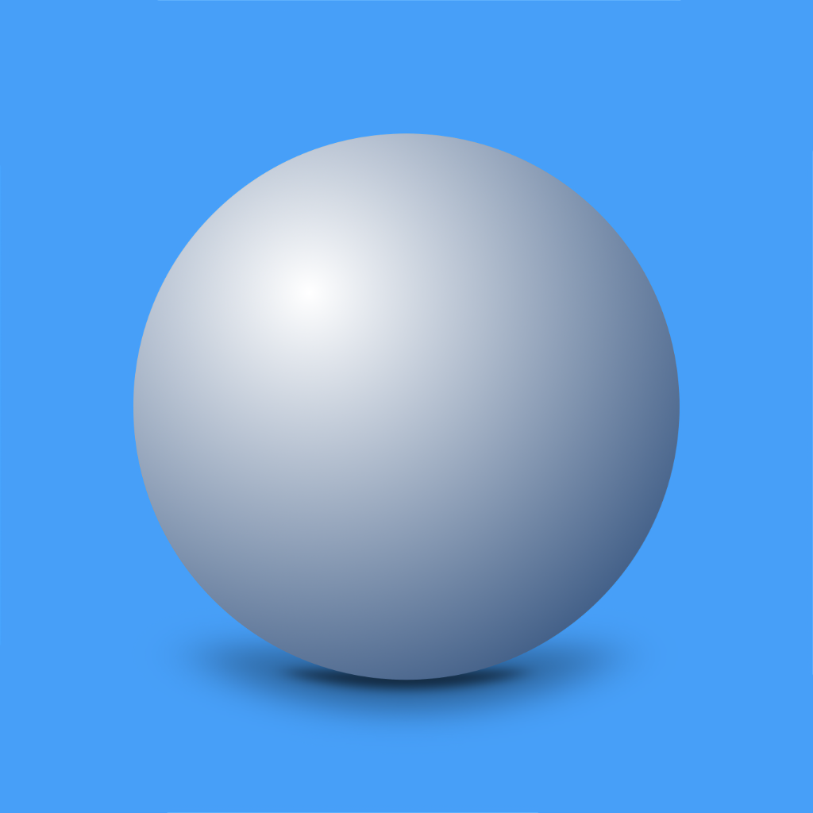

Drop & View
Share Archicad models in the browser
About
Drop & View is a lightweight way to share architectural 3D models without a dedicated viewer. Export a GLB, send the file and the viewer link, and open the model directly in a modern browser. No app, account or upload to Drop & View is required.
Archicad workflow
Using Archicad 28, 29 or 30? The free Drop & View GLB Exporter creates GLB files directly from the active 3D window on supported Apple Silicon Macs and Windows 11 PCs.
The exporter and viewer are designed to work together, preserving the visible model, materials, transparency, clear glass, view and sun settings in a predictable browser-friendly workflow.
Web app
System requirements
Use a current desktop or mobile browser. Large models work best on a capable computer.
How to use
- Drop a GLB onto the page, or click OPEN. No model? Try DEMO.
- Drag to orbit. Right-drag to pan. Scroll or pinch to zoom.
- Double-click a detail to centre it. Click ZOOM ALL to find the whole model again.
- Choose a display style at the top centre and a camera view at the top right.
- Send the GLB file and the viewer link to a client, consultant, project manager or contractor. They can open it the same way.
Export from Archicad
- Get the Drop & View GLB Exporter and add it in Archicad's Add-On Manager.
- Set up the 3D window as you want it shared. Visible elements, materials, the view and sun position go into the GLB.
- Choose Drop & View GLB Exporter → Export active 3D window to GLB…
- Choose how to group the model: by surface, layer or element type. Check the clear-glass selection and add design credits if you like.
- Save the GLB and drop it into Drop & View.
The exporter supports Archicad 28 and 29 on supported Apple Silicon Macs and Windows 11 PCs. Check the release page for system details.
Why GLB?
Drop & View intentionally uses GLB files only. A GLB keeps geometry, materials and textures together in one portable file, making the workflow more predictable and easier to share. Convert other model formats to GLB before opening them here.
Display styles
- ORIGINAL: the model's colours and textures.
- WHITE / HIDDEN: a clean white model, with or without visible edges.
- WIRE: just the wireframe.
- B&W: a graphic light-and-shadow view.
- PATH TRACER: realistic HDRI lighting and glass under ORIGINAL. Let the image refine; more SAMPLES means a cleaner result. Exported Archicad sun settings align its lighting. It may be slow on less capable hardware.
More ways to explore
- PERSP / AXON / ORTHO: perspective, axonometric, top and elevation views.
- CONTROLS: adjust the sun, shadows, transparency, camera and FLY speed.
- GROUPS: show or hide surfaces, layers or element types, depending on the export. Use ALL ON / ALL OFF for a quick reset.
- SECTION: switch on the cut, choose X, Y or Z, then move the slider.
- FLY: on a desktop, use WASD or arrow keys to move; E/Q change height. Click the model to pause or resume; press Escape to release the pointer.
Click the red i beside OPEN FILE for app details, design credits and Support.
If a file does not open
Check the format and try a self-contained GLB. If you see an error, choose another file or try DEMO. Large models may take longer, especially on phones.
Sharing
Send the GLB and the viewer link. The recipient drops the file onto the page and explores it locally in the browser.
Privacy
Your model stays in your browser; Drop & View does not upload it to its own server. The app loads rendering code online, and DEMO downloads a sample model. External converters have their own privacy terms.
Support
Questions, suggestions and feedback are always welcome.